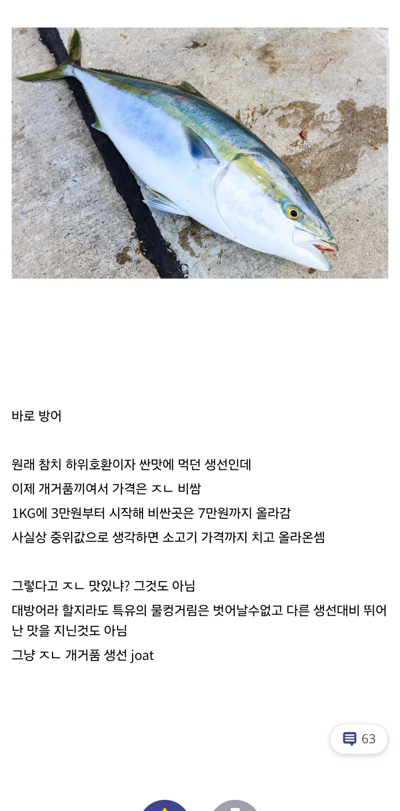

한국에서 은근 거품인 생선
댓글
기름진거 좋아하면 대방어 맛있음
다만 대방어만 해당되고 최소 9키로급, 가능하면 10키로 이상급 먹어야 제대로임
가게에선 5~7키로 핫바리 중방어도 대방어로 속여팔아서 이런거 먹을꺼면 안먹는게 좋음
그돈씨면 참치먹을정도로 올라와서 쳐다도 안봄
이 짤 올라올때 방어 먹으면됨
맛 없음

참치 하위호환 이게 딱 맞는 평가인거같음ㅋㅋ

기름진거 좋아하면 대방어 맛있음
다만 대방어만 해당되고 최소 9키로급, 가능하면 10키로 이상급 먹어야 제대로임
가게에선 5~7키로 핫바리 중방어도 대방어로 속여팔아서 이런거 먹을꺼면 안먹는게 좋음
그돈씨면 참치먹을정도로 올라와서 쳐다도 안봄
이 짤 올라올때 방어 먹으면됨
맛 없음
참치 하위호환 이게 딱 맞는 평가인거같음ㅋㅋ
한번도 안먹어봤는데
궁금해서 먹어볼까? 했더니 존나 비싸져서 안먹음
이거 진짜 맛있는거 맞음?
말하는 사람마다 달라서 모르겠네 ....